Platform Console
Приложение, которое показывает состояние разработки по спеке в одном окне и запускает работу без терминала. Ниже — все экраны: зачем каждый нужен, что на нём происходит и что делает каждая кнопка.
Что это такое и как читать
Приложение показывает состояние разработки по спеке в одном окне и запускает работу без терминала. Зачем оно нужно, какую проблему решает, сколько это стоит команде сегодня и в каком порядке поставляется — в бизнес-ТЗ «Консоль спеки», разделы 1–5. Здесь — только интерфейс: каждый экран, что на нём происходит и что делает каждая кнопка.
| Роль | Её экраны в этом документе |
|---|---|
| Разработчик | 01–06, 12, 13, 15 |
| Менеджер | 16, 17 |
| Тестировщик | 14 |
Разбор самих ролей — какой у каждой вопрос, что покрыто сегодня, почему у менеджера две половины роли — в разделе 5 ТЗ и здесь не повторяется.
Каркас интерфейса
Эти элементы одинаковы на всех рабочих экранах, поэтому описаны один раз.
Шапка — два уровня
Верхняя строка — проект (спека, с которой работаем; их может быть несколько). Нижняя — группа работы внутри проекта. Подпись группы меняется в зависимости от того, как спека организует работу. Стратегий шесть; приложение выбирает подходящую само, человек может сменить выбор в настройках — признаки выбора разобраны в разделе 4 ТЗ:
| Подпись | Когда | Пример |
|---|---|---|
| Спринт: | в спеке есть каталоги спринтов | Локальный вход по PIN |
| Мастер-спека: | работа группируется вокруг документа | Рассылка из Master Ticket |
| Релиз: | группировка по версии трекера | 3.7 · оформление карточек |
| Родительская задача: | группировка по задаче-родителю | #63368 · Проактивные тикеты |
| по названию списка | состав группы перечислен в файле спеки | Набор изменений 3.7 |
| Change'и | группировки нет — плоский список | 7 изменений |
Под заголовком группы — строка контекста: ветка спеки, режим сдачи
и версии сборок по каждому стеку — «features/pin-biometric-auth ·
сдача целиком (batch) · iOS 3.6.7 (TestFlight) · Android 2.5.1(569)». Она
отвечает на вопросы «в какой ветке идёт работа» и «что сейчас у тестировщика»,
не занимая отдельного места на экране. Состав строки зависит от спеки: нет сборок —
останутся ветка и режим сдачи.
Справа — индикатор свежести данных и кнопка обновления.
| Элемент | Что делает |
|---|---|
| Проект: … ⌄ | раскрывает список подключённых спек и пункт «Подключить проект». Если проект один — чип не показывается |
| Спринт / Мастер-спека … ⌄ | раскрывает список групп: спринты, мастер-спеки, версии и задачи трекера вперемешку — с названием, типом и счётчиком change'ей |
| обновлено N мин назад | показывает возраст данных: «только что» (из файлов), «12 минут» (из трекера), «данные устарели» с мягкой подсветкой |
| ⟳ (R) | обновляет всё: подтягивает спеку из git, перечитывает файлы, опрашивает трекер |
Левое меню
Состав пунктов зависит от того, что спека умеет. Нет сборок — «Передача» останется, но с приглушённой иконкой и счётчиком невыполненных требований. Нет QA-тулчейна — раздела «Тестирование» не будет вовсе. Внизу — рабочее место: роль и проект (например «Разработчик · ios · avtoto»).
Панель запуска (низ окна)
Показывает последнюю выполненную команду: саму строку моноширинным, код возврата, длительность и проект, в котором она выполнялась. Разворачивается кликом — внутри полный вывод. Кнопка копировать команду кладёт строку в буфер, чтобы выполнить её руками в терминале.
Подключение проекта
Мастер из четырёх шагов. Все шаги видны сразу, пройденные помечены галочкой, будущие приглушены. Так человек с самого начала понимает объём работы.
Показать экран
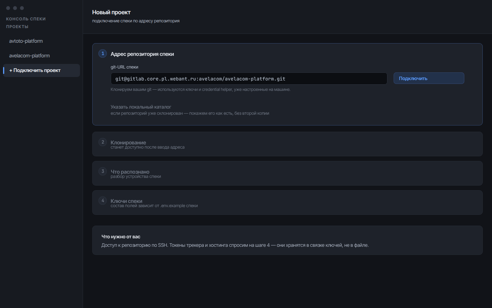
Начало работы с новой спекой. Человек вставляет git-адрес — больше ничего знать не нужно.
- поле для git-URL с примером формата;
- пояснение: «Клонируем вашим git — используются ключи и credential helper, уже настроенные на машине»;
- альтернатива «Указать локальный каталог» — если репозиторий уже склонирован, второй копии не будет;
- внизу блок «Что нужно от вас»: доступ по SSH; токены спросим на шаге 4.
| Кнопка | Действие |
|---|---|
| Подключить | запускает клонирование и переводит на шаг 2 |
| Указать локальный каталог | открывает выбор папки — клонирование пропускается |
| + Подключить проект | в левом списке: тот же мастер для ещё одной спеки |
Показать экран
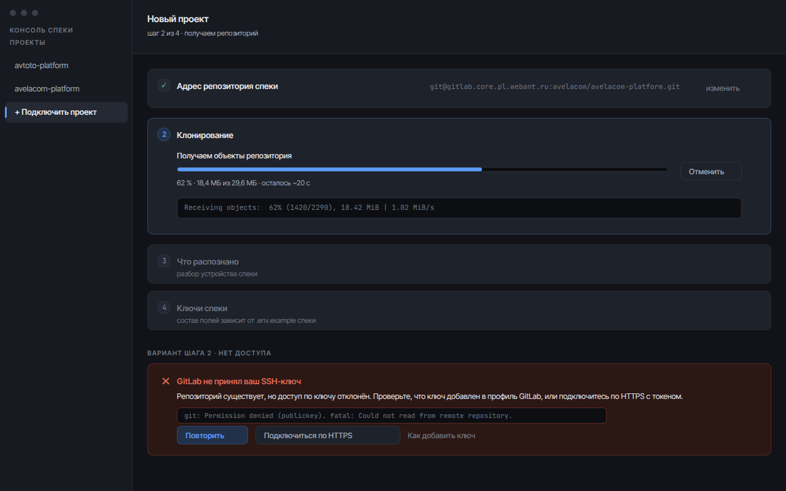
Показывает долгую операцию честно: сколько скачано, сколько осталось, и что происходит.
- полоса прогресса с процентами: «62 % · 18,4 МБ из 29,6 МБ · осталось ~20 с»;
- живой вывод git моноширинным — то же, что человек увидел бы в терминале;
- шаг 1 свёрнут в строку с адресом и кнопкой «изменить».
Отдельно отрисован самый частый случай — «GitLab не принял ваш SSH-ключ»: объяснение человеческим языком, точная строка ошибки git и три выхода.
| Кнопка | Действие |
|---|---|
| Отменить | прерывает клонирование, возвращает на шаг 1 |
| Повторить | пробует снова с тем же адресом |
| Подключиться по HTTPS | переключает способ доступа — вместо ключа токен |
| Как добавить ключ | инструкция по добавлению SSH-ключа в профиль GitLab |
Показать экран
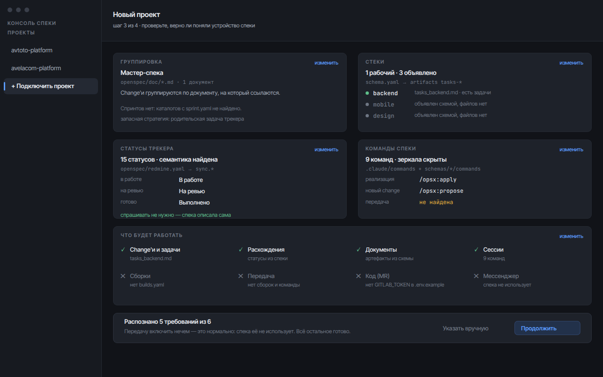
Ключевой экран доверия. Приложение прочитало спеку и показывает, что поняло, — до того, как начнёт этим пользоваться. Всё можно поправить.
| Карточка | Что показывает | Откуда |
|---|---|---|
| Группировка | «Мастер-спека · 1 документ», пояснение «спринтов нет» | openspec/doc |
| Стеки | «1 рабочий · 3 объявлено»: backend с задачами, mobile и design объявлены схемой, но файлов нет | schema.yaml |
| Статусы трекера | «15 статусов · семантика найдена»: какой статус означает «в работе», «на ревью», «готово» | redmine.yaml |
| Команды спеки | «9 команд · зеркала скрыты» и какие из них получат роли | .claude/commands |
| Что будет работать | галочки и крестики по фичам: change'и, расхождения, документы, команды — есть; сборки, код, мессенджер — нет и почему | сводка |
| Кнопка | Действие |
|---|---|
| изменить | у каждой карточки: правка распознанного вручную |
| Указать вручную | полная ручная настройка, если разбор не удался |
| Продолжить | принять распознанное и перейти к ключам |
Показать экран
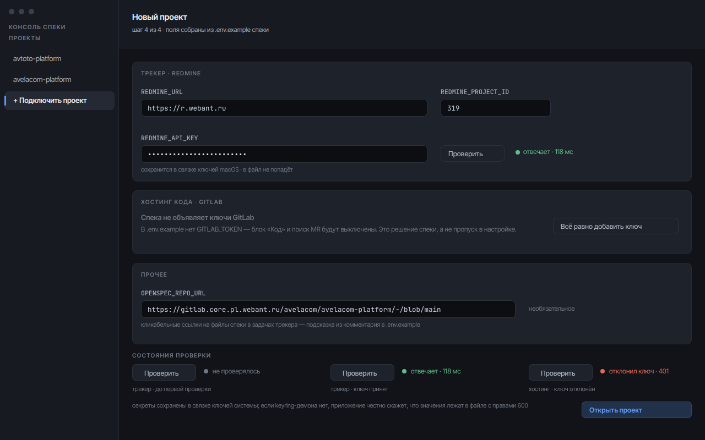
Ключи вводятся в приложении, а не в файле. Состав полей — из .env.example
конкретной спеки, поэтому у разных команд он разный.
- поля сгруппированы по системам: «Трекер · Redmine», «Хостинг кода · GitLab», «Прочее»;
- секреты маскируются, под ними подпись «сохранится в связке ключей macOS · в файл не попадёт»;
- отдельно оговорён запасной путь: «если keyring-демона нет, приложение честно скажет, что значения лежат в файле с правами 600» — молчаливой подмены хранилища не будет;
- у необязательных полей — пометка и пояснение из комментария в
.env.example; - если спека не объявляет систему — блок так и говорит: «Спека не объявляет ключи GitLab… Это решение спеки, а не пропуск в настройке»;
- отдельно показаны три состояния проверки: не проверялось · отвечает · отклонил ключ (401).
| Кнопка | Действие |
|---|---|
| Проверить | у каждой группы: пробует подключиться с введённым ключом и показывает результат со временем ответа |
| Всё равно добавить ключ | добавить ключ системы, которую спека не объявляет |
| Открыть проект | завершает мастер и открывает главный экран |
Главный экран — состояние работы
Показать экран
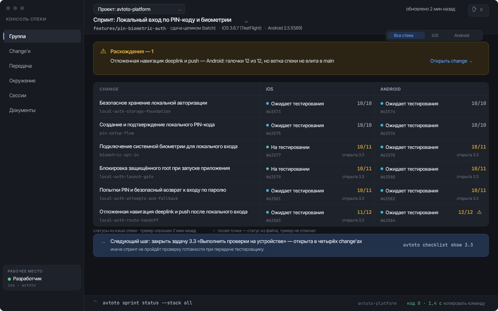
Отвечает на вопрос «где мы и что мешает» за пять секунд. Это экран, ради которого сделано приложение.
- Блок расхождений — самое заметное на экране. Пример: «Отложенная навигация — Android: галочки 12 из 12, но ветка спеки не влита в main». Рядом ссылка «Открыть change →». Если расхождений нет, блок исчезает, а не показывает пустую рамку.
- Таблица change'ей — строка на изменение, колонка на стек. В ячейке: статус трекера, номер задачи, отметки задач («10/11»), пометка какая задача открыта («открыта 3.3») и знак расхождения.
- Подпись о свежести: «статусы из кэша спеки · трекер опрошен 2 мин назад», с пояснением «полая точка — статус из файла, трекер не отвечал».
- Плашка следующего шага — одна на экран: что сделать дальше, почему это важно и точная команда, которую можно скопировать.
| Кнопка | Действие |
|---|---|
| Все стеки · iOS · Android | переключатель справа над таблицей — фильтр колонок. При одном рабочем стеке не показывается вовсе (см. 01b) |
| строка таблицы | открывает карточку change'а |
| Открыть change → | в блоке расхождений: ведёт к тому изменению, где расхождение |
| #63573 | номер задачи — открывает её в трекере в браузере |
Показать экрана (4)
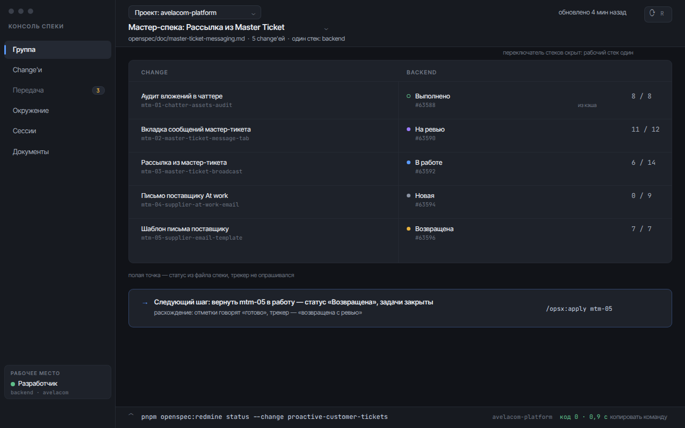
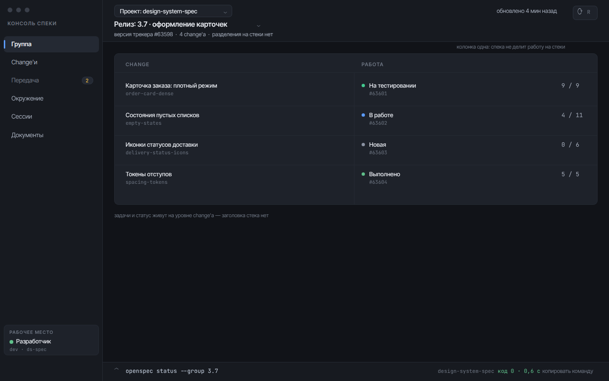
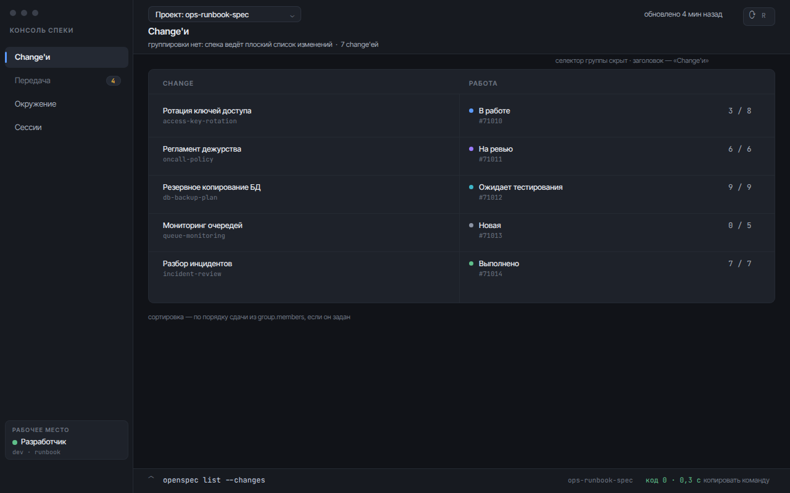
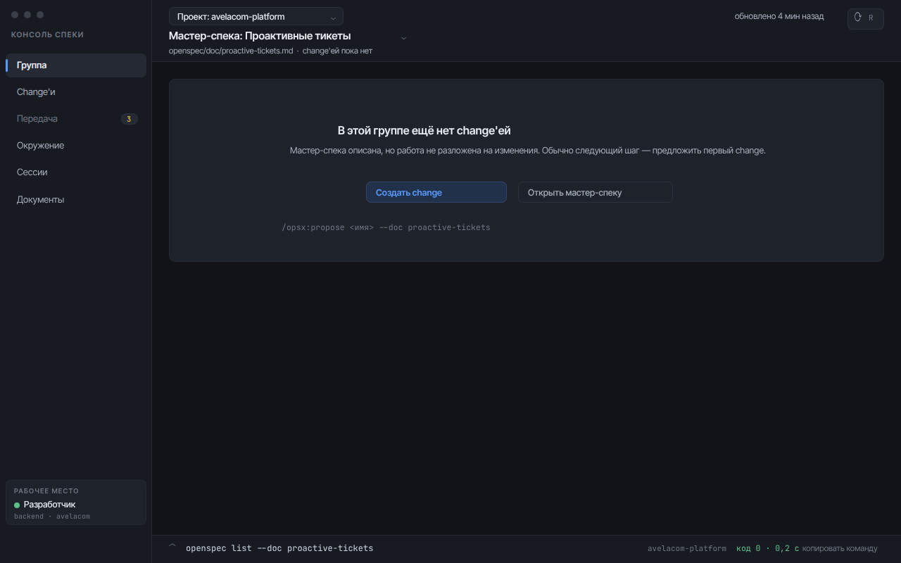
У разных команд разная глубина процесса. Экран один, меняется только раскладка — это то, что делает приложение пригодным для любой спеки.
| Вариант | Когда | Что меняется |
|---|---|---|
| 01b · один стек | спека ведёт одну дорожку работы (avelacom: backend) | одна колонка на всю ширину, переключатель стеков скрыт |
| 01c · без стеков | спека не делит работу на стеки | колонка называется «Работа», задачи и статус на уровне change'а |
| 01d · без группировки | спека ведёт плоский список изменений | селектор группы скрыт, заголовок «Change'и», сортировка по порядку сдачи |
| 01e · пустая группа | группа создана, изменений ещё нет | вместо таблицы — объяснение и кнопки «Создать change» и «Открыть мастер-спеку», под ними готовая команда |
Показать экрана (2)
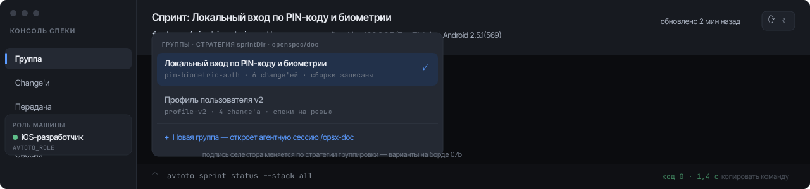
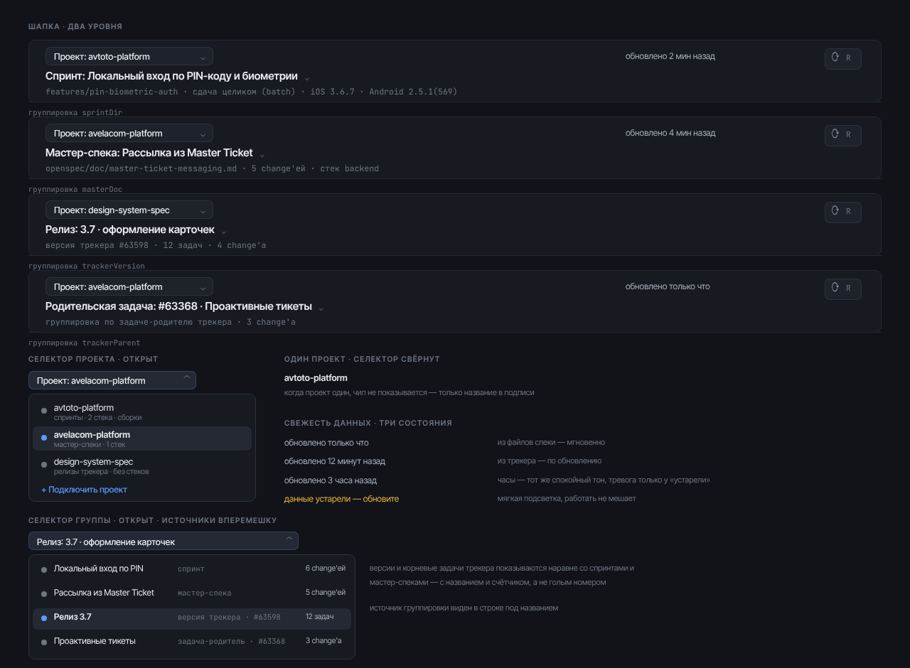
Переключение между спринтами, мастер-спеками, релизами и родительскими задачами — всё в одном списке.
Каждая строка: название, тип источника и счётчик. «Локальный вход по PIN · спринт · 6 change'ей», «Релиз 3.7 · версия трекера #63598 · 12 задач». Версии и задачи трекера показываются наравне со спринтами — с названием, а не голым номером.
| Кнопка | Действие |
|---|---|
| строка списка | переключает группу; таблица, передача и документы перестраиваются |
| + Новая группа | последняя строка списка. Открывает агентную сессию с командой создания группы — на макете подписано, с какой именно: «откроет агентную сессию /opsx-doc». Название берётся из роли «новая группа» в настройках проекта |
Карточка change — всё об одной единице работы
Показать экрана (2)
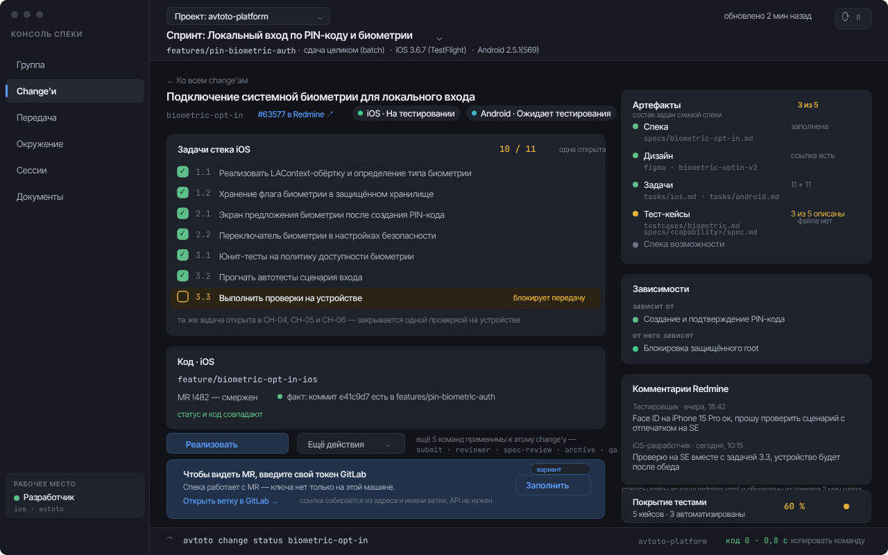
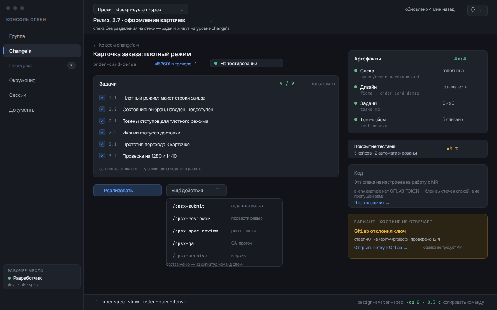
Собирает в одном месте то, что раньше искали по трём системам: что сделано, что мешает, где код, что обсуждали. И отсюда же запускается работа.
- чеклист по каждому стеку с отметками и счётчиком «10 / 11 · одна открыта»;
- незакрытая задача подсвечена и помечена «блокирует передачу»;
- подсказка, если та же задача открыта в нескольких change'ах: «закрывается одной проверкой на устройстве»;
- у спеки без стеков (02b) чеклист один, без заголовка стека.
| Блок | Что показывает |
|---|---|
| Артефакты | спека, дизайн, задачи, тест-кейсы — с признаком заполненности и счётчиком «3 из 5». Состав задаётся схемой спеки, поэтому у разных команд разный. Отсутствующий файл помечен «файла нет» |
| Зависимости | от каких change'ей зависит и кто зависит от него |
| Код | ветка, состояние MR и факт влития: «MR !482 — смержен» + «коммит e41c9d7 есть в features/pin-biometric-auth» |
| Комментарии | лента обсуждения из трекера — то, чем обмениваются разработчик и тестировщик |
| Покрытие тестами | «5 кейсов · 3 автоматизированы · 60 %» — если подключён QA-тулчейн |
• спека не использует MR — «В .env.example нет GITLAB_TOKEN — блок выключен спекой, а не пропущен вами»;
• ключа нет у меня — «Чтобы видеть MR, введите свой токен» + кнопка Заполнить;
• система не отвечает — «GitLab отклонил ключ · ответ 401» + «Проверить снова».
В любом случае доступна ссылка Открыть ветку в GitLab → — она собирается из адреса и не требует API.
| Кнопка | Действие |
|---|---|
| Реализовать | запускает команду реализации спеки в агентной сессии для этого change'а и стека |
| Ещё действия ⌄ | меню остальных команд, применимых к этому change'у: отдать на ревью · провести ревью · ревью спеки · QA-прогон · в архив. Состав собирается из сигнатур команд спеки, а не задан жёстко |
| строка артефакта | открывает документ в приложении |
| #63577 в Redmine ↗ | открывает задачу в браузере |
| Заполнить | ведёт в форму ключей к нужному полю |
| ← Ко всем change'ам | возврат к списку |
Показать экрана (2)
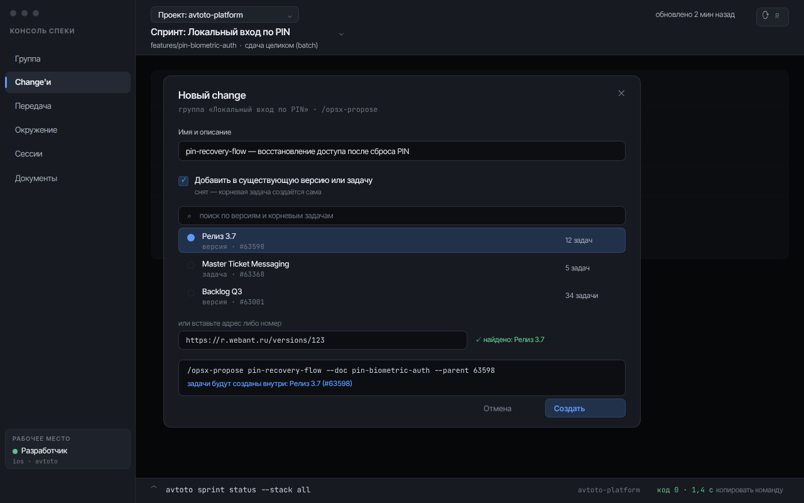
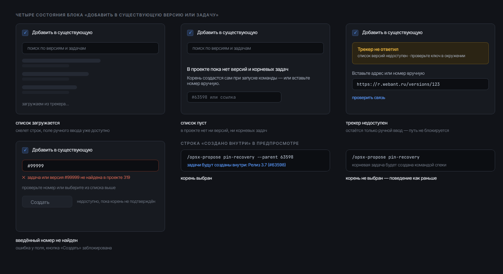
Создать новое изменение — и, если нужно, положить его в уже существующую версию или задачу трекера, где уже лежит пул работы.
- поле имени и описания;
- чекбокс «Добавить в существующую версию или задачу». Снят — корневая задача создаётся сама;
- при включении: поиск и список из трекера — «Релиз 3.7 · версия · #63598 · 12 задач», «Master Ticket Messaging · задача · #63368 · 5 задач»;
- запасной путь — поле «или вставьте адрес либо номер» с проверкой: «✓ найдено: Релиз 3.7»;
- внизу — точная команда и строка «задачи будут созданы внутри: Релиз 3.7 (#63598)».
| Состояние | Что видно |
|---|---|
| загружается | скелет строк, ручной ввод уже доступен |
| пусто | «В проекте пока нет версий и корневых задач» — корень создастся сам |
| трекер недоступен | «список версий недоступен · проверьте ключ» — остаётся ручной ввод, путь не блокируется |
| номер не найден | «задача или версия #99999 не найдена в проекте 319», кнопка «Создать» заблокирована |
| Кнопка | Действие |
|---|---|
| Создать | запускает команду создания в сессии; недоступна, пока корень не подтверждён |
| Отмена | закрывает диалог |
| проверить связь | проверяет введённый номер или ссылку |
Передача тестировщику
Показать экран
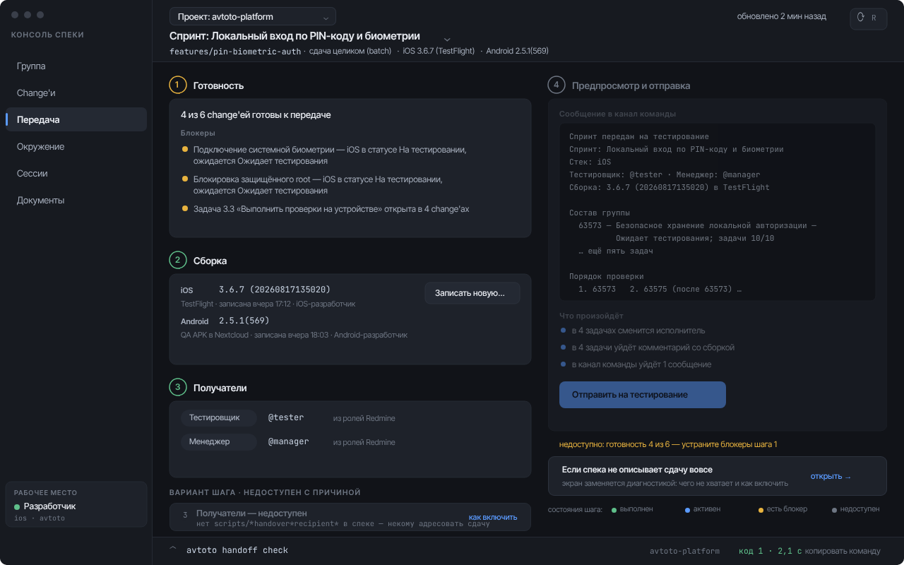
Собрать всё нужное и отдать работу тестировщику одним действием, заранее видя, что именно уйдёт людям и что изменится в задачах.
| Шаг | Что показывает |
|---|---|
| 1 · Готовность | «4 из 6 change'ей готовы» и список блокеров причинами: «Подключение биометрии — iOS в статусе На тестировании, ожидается Ожидает тестирования» |
| 2 · Сборка | какая сборка записана по каждому стеку, когда и кем: «3.6.7 (20260817135020) · TestFlight · записана вчера 17:12» |
| 3 · Получатели | тестировщик и менеджер — подбираются скриптом спеки из ролей трекера и участников канала |
| 4 · Предпросмотр и отправка | точный текст сообщения, которое увидят люди — заголовок, спринт, стек, сборка, получатели, состав группы (задачи со статусами и отметками) и порядок проверки с зависимостями «63575 после 63573». Ниже — «Что произойдёт»: «в 4 задачах сменится исполнитель · в 4 задачи уйдёт комментарий со сборкой · в канал команды уйдёт 1 сообщение» |
| Кнопка | Действие |
|---|---|
| Записать новую… | записывает свежую сборку командой спеки |
| Отправить на тестирование | показывает подтверждение с точной командой и запускает её в сессии. Недоступна, пока есть блокеры — под кнопкой написано почему: «недоступно: готовность 4 из 6 — устраните блокеры шага 1» |
| открыть → | если спека вообще не описывает сдачу — ведёт на экран диагностики |
Агентные сессии — запуск работы
Часть работы нельзя свести к кнопке: написать спеку, реализовать задачи, разобрать дефект. Это делается в диалоге с агентом — приложение запускает настоящий Claude Code в каталоге спеки, со всеми её командами и правами пользователя.
Показать экран
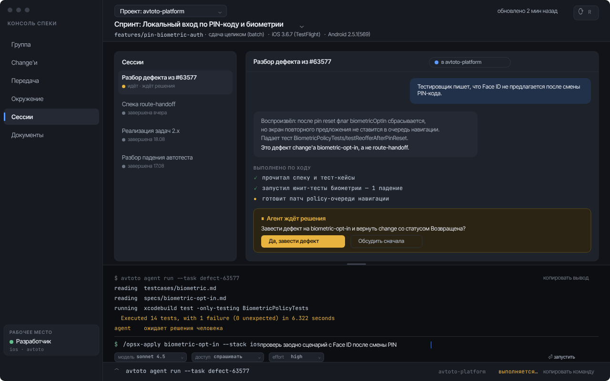
Показывает, что агент делает, и даёт вмешаться, когда нужно решение человека.
- слева список сессий: заголовок, состояние («идёт · ждёт решения», «завершена вчера») и время;
- контекст сессии — под заголовком написано, где она выполняется. Если сессия привязана к изменению, там строка «change mtm-03 · стек backend · ветка features/mtm-03» (макет 05b); если это свободный разбор — только проект, «в avtoto-platform». Видно, над чем идёт работа, без перехода на другой экран;
- лента диалога: реплики человека справа, ответы агента слева;
- «Выполнено по ходу» — список действий агента: «прочитал спеку и тест-кейсы», «запустил юнит-тесты — 1 падение», «готовит патч»;
- блок «Агент ждёт решения» — когда нужен ответ человека, с вариантами;
- строка ввода внизу — во всю ширину контента, над ней лог выполнения.
| Кнопка | Действие |
|---|---|
| Да, завести дефект | подтверждает предложенное агентом действие и продолжает работу |
| Обсудить сначала | оставляет решение открытым, человек пишет уточнение |
| Остановить | прерывает работу агента |
| копировать вывод | кладёт лог в буфер |
Показать экран
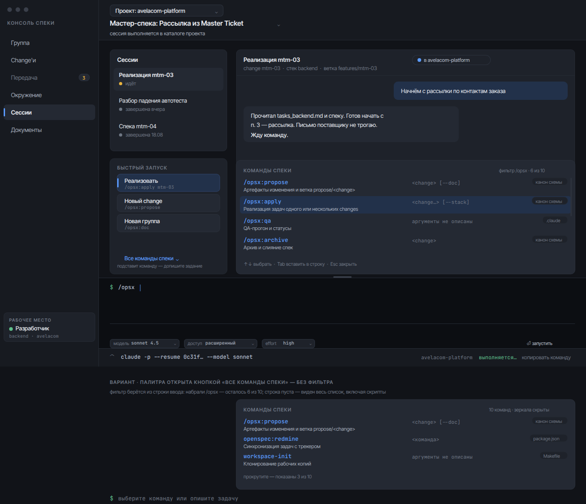
Даёт запускать работу, не набирая команды руками, — и найти нужную, если её не помнишь.
Под списком сессий — блок с кнопками. Это не произвольный набор: кнопки получают те команды, которым в спеке назначены роли (реализация, новый change, новая группа, передача) — те же четыре роли, что настраиваются в настройках проекта. Роль не назначена — кнопки нет. Под каждой подписана команда моноширинным, чтобы было видно, что именно запустится.
| Кнопка | Что подставит |
|---|---|
| Реализовать | /opsx:apply mtm-03 — для текущего change'а |
| Новый change | /opsx:propose |
| Новая группа | /opsx:doc |
| Все команды спеки ⌄ | открывает палитру |
Открывается компактной выпадашкой над строкой ввода: 4–5 строк со скроллом, шириной в колонку транскрипта. Левая колонка при этом остаётся видимой — список сессий и кнопки не перекрываются.
Своего поля поиска у палитры нет — ищет сама строка ввода.
Набираете в ней /opsx — в списке остаются только команды, которые
начинаются с этих букв, а шапка показывает, сколько из скольких:
«фильтр /opsx · 6 из 10» — шесть подходящих из десяти команд спеки.
Отсюда два входа в палитру, и они дают разное:
| Как открыли | Что видно |
|---|---|
начали печатать / в строке ввода | палитра открылась сама и сужается с каждой буквой; в шапке — текущий фильтр и счётчик |
| нажали «Все команды спеки» | полный список без фильтра — когда не помнишь даже начала команды |
Каждая строка: имя команды, назначение, ожидаемые аргументы и источник — «канон схемы», «.claude», «package.json», «Makefile». Источник виден всегда, чтобы было понятно, откуда команда взялась. Зеркала (одна команда, продублированная в пяти каталогах) схлопываются в одну строку.
Клавиши подписаны прямо в панели: ↑↓ выбрать · Tab вставить
в строку · Esc закрыть.
Показать экран
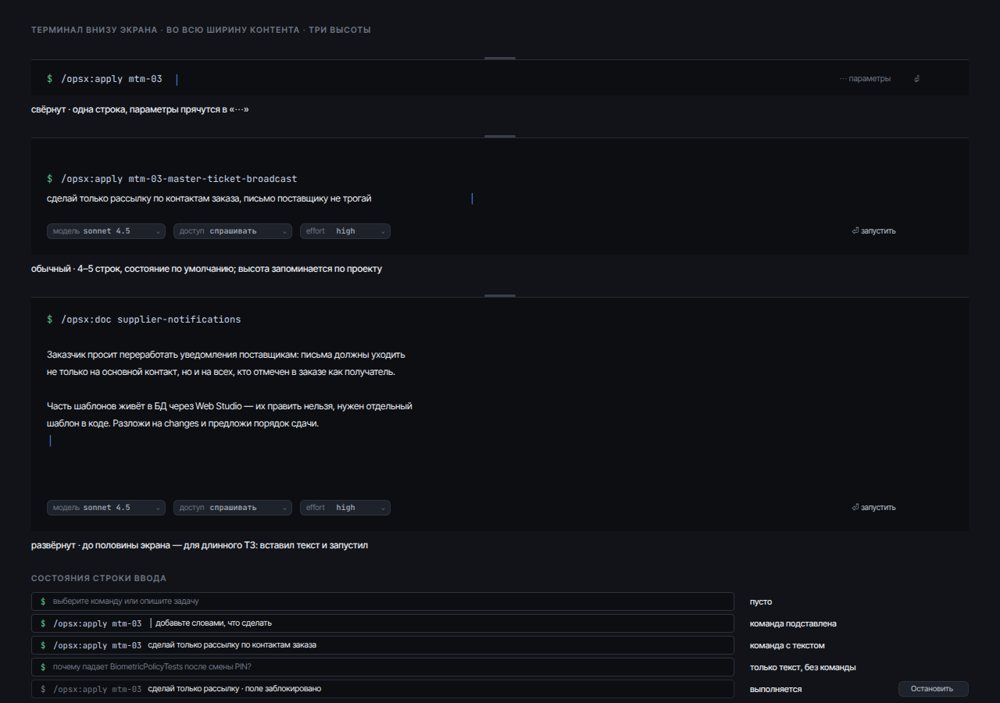
Команда почти никогда не запускается «как есть»: к ней дописывают словами, что именно сделать. Поэтому внизу экрана, во всю ширину контента, живёт постоянная строка ввода.
- команда — из палитры или кнопки — подставляется строкой, курсор встаёт после неё;
- дальше человек дописывает задание обычным текстом: «сделай только рассылку по контактам заказа, письмо поставщику не трогай»;
- всё вместе уходит одним запросом;
- поле работает и без команды — как обычный вопрос агенту: «почему падает тест BiometricPolicyTests?».
| Высота | Когда |
|---|---|
| свёрнут · одна строка | параметры прячутся в «…», команда видна целиком |
| обычный · 4–5 строк | состояние по умолчанию, высота запоминается по проекту |
| развёрнут · до половины экрана | для длинного ТЗ: вставил текст и запустил |
пусто («выберите команду или опишите задачу») · команда подставлена · команда с текстом · только текст, без команды · выполняется (поле заблокировано, видна кнопка «Остановить»).
Под полем — три компактных селектора: модель (sonnet), доступ (спрашивать / расширенный) и effort (high). Они меняются от задачи к задаче — разбор требует минимального доступа, реализация расширенного — поэтому стоят рядом с полем, а не спрятаны в настройки. Значения запоминаются по проекту.
Показать экран
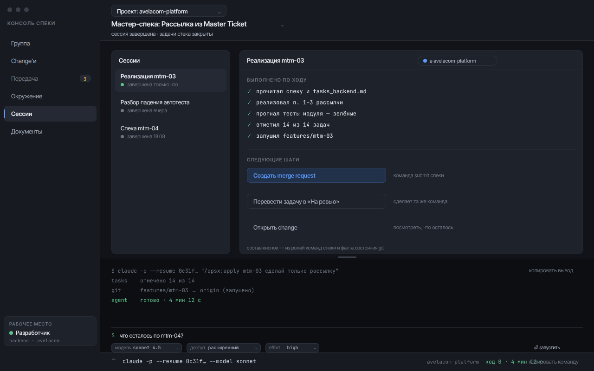
Работа закончилась — приложение показывает, что сделано, и предлагает продолжение, чтобы человеку не пришлось вспоминать следующую команду.
- «Выполнено по ходу» — итог работы агента списком: «прочитал спеку и tasks_backend.md», «реализовал п. 1–3 рассылки», «прогнал тесты модуля — зелёные», «отметил 14 из 14 задач», «запушил features/mtm-03»;
- «Следующие шаги» — кнопки продолжения, у каждой справа пояснение, что за ней стоит;
- лог завершённого запуска внизу: команда целиком, отметки задач, состояние ветки, «готово · 4 мин 12 с»;
- поле ввода уже готово к следующему вопросу.
| Кнопка | Действие | Пояснение на экране |
|---|---|---|
| Создать merge request | запускает команду сдачи стека | команда submit спеки |
| Перевести задачу в «На ревью» | меняет статус в трекере | сделает та же команда |
| Открыть change | переход в карточку изменения | посмотреть, что осталось |
Документы спеки
Показать экрана (2)
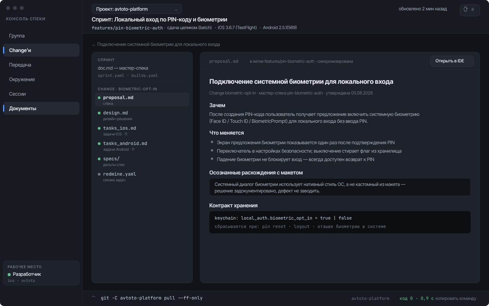
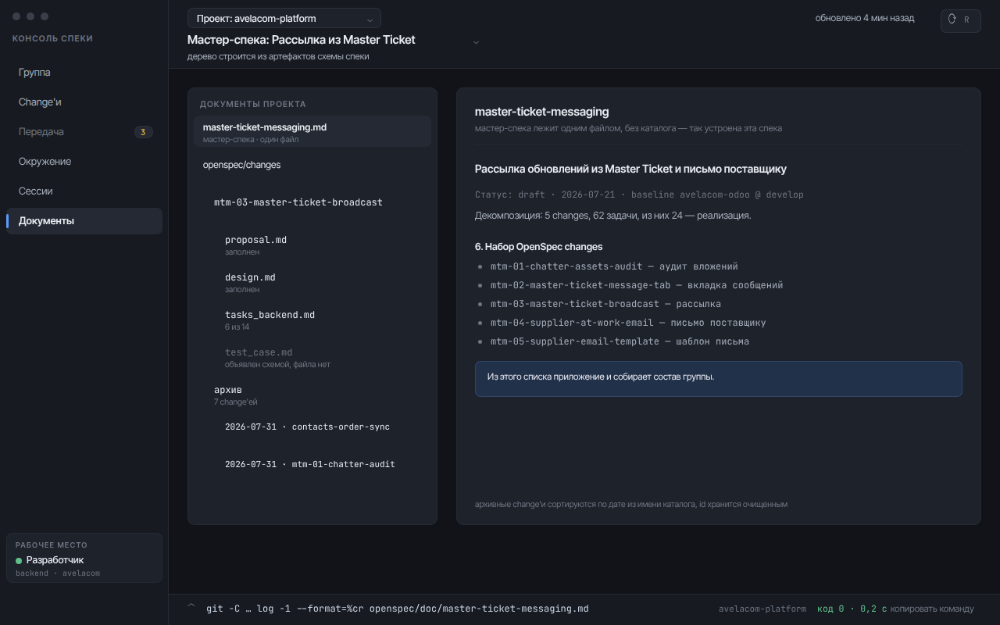
Спеки, задачи и тест-кейсы читаются в приложении — не нужно открывать редактор и искать файлы.
- слева дерево: документы группы и артефакты change'а с признаком заполненности («заполнен», «6 из 14», «объявлен схемой, файла нет»);
- справа отрендеренный документ с заголовками, списками и блоками кода;
- вверху — где лежит файл и синхронизирован ли он с веткой;
- раздел «архив» — завершённые change'и, отсортированные по дате из имени каталога.
proposal.md · design.md · tasks_ios.md, у другой —
test_case.md · specs/<capability>/spec.md. Приложение не хранит списка.
| Кнопка | Действие |
|---|---|
| Открыть в IDE | открывает файл в редакторе по умолчанию |
| строка дерева | показывает документ справа |
Окружение и настройки
Показать экран
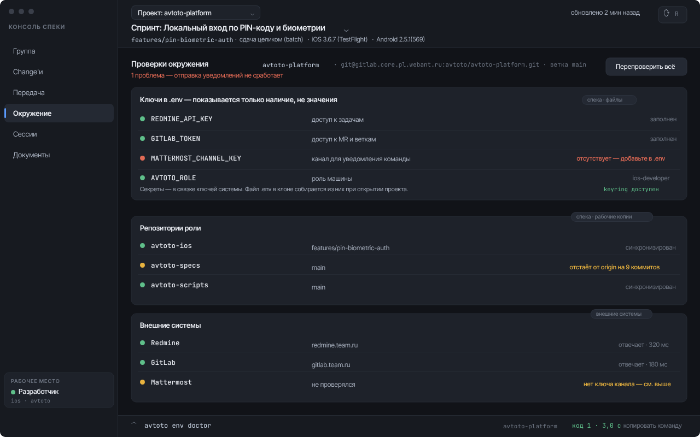
Ловит проблему до запуска, а не в середине. Половина сбоев начинается здесь: не заполнен ключ, не склонирован репозиторий, не отвечает система.
| Секция | Что проверяет |
|---|---|
| Ключи в .env | наличие (не значения!) каждого ключа, который объявила спека. Отсутствующий помечен «отсутствует — добавьте в .env» |
| Репозитории роли | склонированы ли рабочие копии, на какой ветке, отстают ли от origin |
| Внешние системы | отвечают ли трекер, хостинг кода и мессенджер, за сколько миллисекунд |
Вверху итог: «1 проблема — отправка уведомлений не сработает». Внизу пояснение о хранении секретов: «Секреты — в связке ключей системы. Файл .env в клоне собирается из них при открытии проекта» с пометкой «keyring доступен».
| Кнопка | Действие |
|---|---|
| Перепроверить всё | заново опрашивает системы и перечитывает состояние репозиториев |
Показать экрана (2)
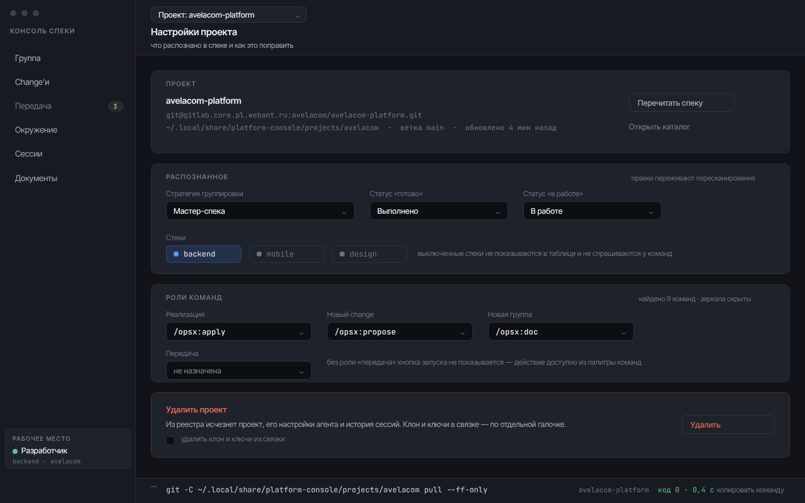
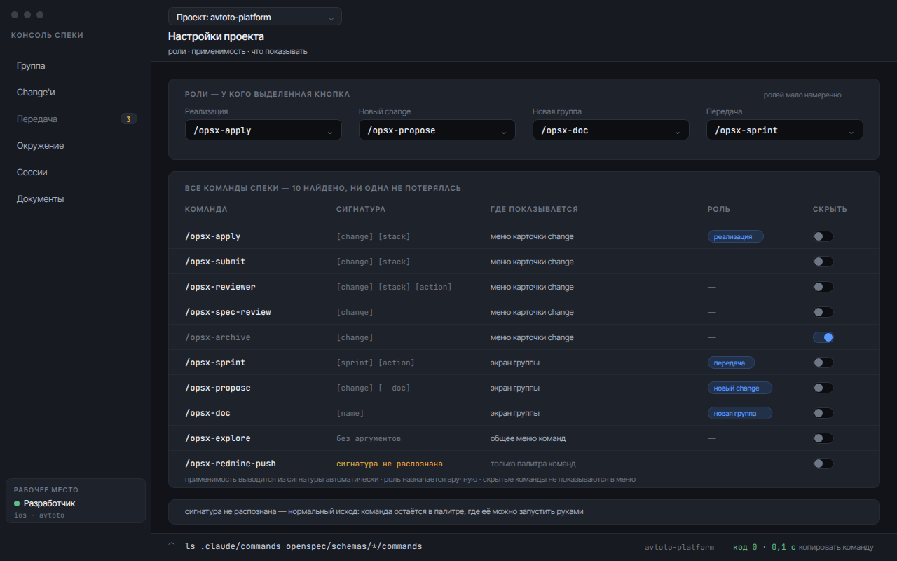
Всё, что приложение распознало в спеке, — и возможность это поправить, если поняло неверно.
- Проект: адрес, локальный путь, ветка, когда обновлялся;
- Распознанное: стратегия группировки, какие статусы означают «готово» и «в работе», список стеков с возможностью выключить лишние. Пометка: «правки переживают пересканирование»;
- Роли команд: какая команда получает выделенную кнопку — реализация, новый change, новая группа, передача. Роль можно не назначать: на макете «передача» стоит в положении «не назначена», и рядом написано, что это значит — «без роли „передача“ кнопка запуска не показывается — действие доступно из палитры команд». Команда не пропадает, пропадает только кнопка;
- Все команды спеки (13b) — таблица: команда, сигнатура, где показывается, роль, переключатель «скрыть»;
- Удалить проект с отдельной галочкой «удалить клон и ключи из связки».
[change] → меню карточки change'а,
[sprint] → экран группы, без аргументов → общее меню. Поэтому особенные
команды платформы попадают в интерфейс сами, без настройки: из десяти команд ни одна
не теряется.
| Кнопка | Действие |
|---|---|
| Перечитать спеку | заново разбирает устройство спеки после изменений в ней |
| Открыть каталог | показывает клон в файловом менеджере |
| Удалить | убирает проект из реестра; клон и ключи — только если отмечена галочка |
Показать экран
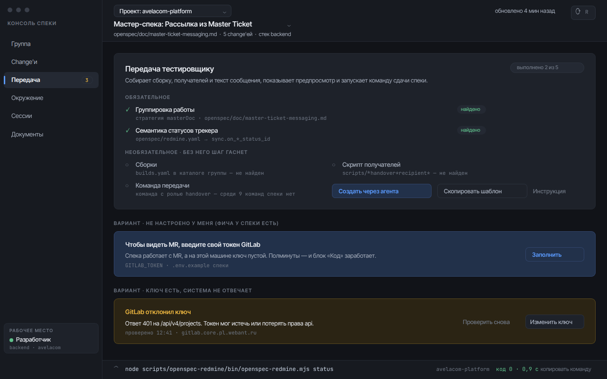
Если спека чего-то не поддерживает, экран не исчезает и не показывает пустоту — он объясняет, чего не хватает и как это включить.
- название фичи и одна строка «зачем она»;
- счётчик «выполнено 2 из 5»;
- обязательные требования — без них фича не работает: группировка, семантика статусов. У выполненного — где найдено;
- необязательные — «без него шаг гаснет»: сборки, скрипт получателей, команда передачи. У каждого — где искали и что не нашли.
| Кнопка | Действие |
|---|---|
| Создать через агента | открывает сессию с готовым заданием: добавить в спеку недостающий файл по контракту |
| Скопировать шаблон | кладёт в буфер заготовку нужного файла |
| Инструкция | открывает описание, как включить фичу |
Экраны менеджера
Менеджер смотрит редко и хочет ответ за пять секунд. Стеки, ветки и чеклисты ему не нужны — он в них не разбирается и не должен. Плюс вторая половина роли: он приносит ТЗ и должен запустить работу, ни разу не открыв терминал.
Показать экран
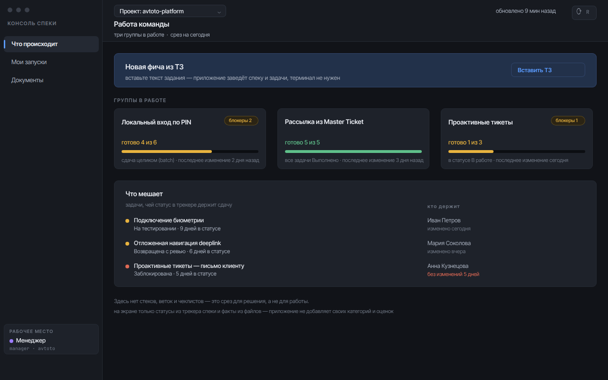
Срез по всей работе команды на сегодня — для решения, а не для работы.
- левое меню короче — всего три пункта: «Что происходит», «Мои запуски», «Документы». Change'ей, передачи и окружения у менеджера нет: состав меню собирается под рабочее место, а не прячется галочками;
- «Новая фича из ТЗ» — крупный блок сверху: «вставьте текст задания — приложение заведёт спеку и задачи, терминал не нужен»;
- Группы в работе — карточки: название, «готово 4 из 6», счётчик блокеров, режим сдачи и когда последний раз что-то менялось;
- Что мешает — таблица блокеров: задача, её статус и сколько дней в нём находится, и кто держит — имя исполнителя из трекера.
| Кнопка | Действие |
|---|---|
| Вставить ТЗ | открывает поле для текста задания; после запуска ведёт на экран прогресса |
| карточка группы | раскрывает подробности по этой группе |
Показать экран
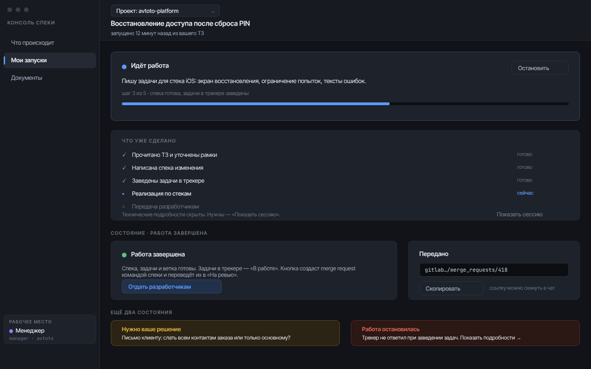
Показывает, что происходит с запущенной задачей, на языке результата, а не команд.
- заголовок задачи и «запущено 12 минут назад из вашего ТЗ»;
- живая строка «что сейчас делает агент»: «Пишу задачи для стека iOS: экран восстановления, ограничение попыток, тексты ошибок»;
- «шаг 3 из 5 · спека готова, задачи в трекере заведены»;
- «Что уже сделано» — чеклист этапов: прочитано ТЗ · написана спека · заведены задачи · реализация (сейчас) · передача разработчикам;
- пометка «Технические подробности скрыты. Нужны — „Показать сессию"».
«Спека, задачи и ветка готовы. Задачи в трекере — „В работе". Кнопка создаст merge request командой спеки и переведёт их в „На ревью"». После нажатия — ссылка на MR с кнопкой «Скопировать»: её можно скинуть в чат.
| Кнопка | Действие |
|---|---|
| Отдать разработчикам | создаёт merge request командой спеки и переводит задачи в «На ревью» |
| Скопировать | кладёт ссылку на MR в буфер |
| Показать сессию | открывает обычный экран сессии со всеми подробностями |
| Остановить | прерывает работу |
Ещё два состояния: «Нужно ваше решение» (агент задаёт вопрос по существу: «слать всем контактам заказа или только основному?») и «Работа остановилась» («Трекер не ответил при заведении задач. Показать подробности →»).
Экран тестировщика
Показать экран
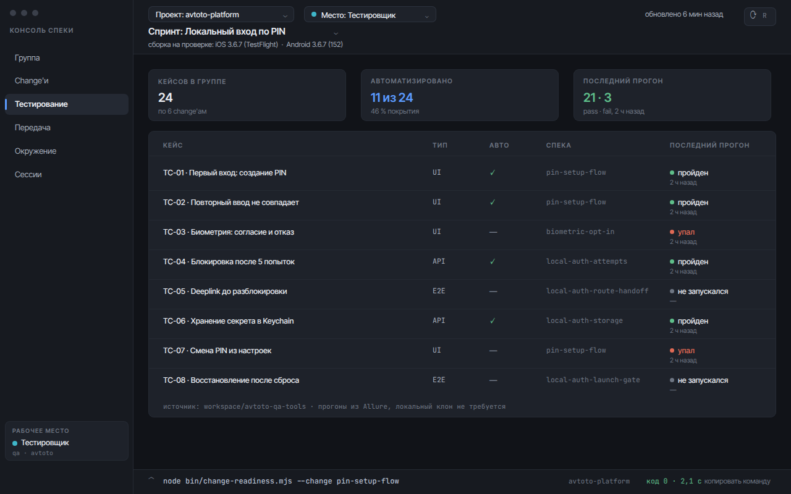
Отвечает на вопросы тестировщика: что проверять, на какой сборке, что уже закрыто автотестами. Раздел появляется, только если у команды подключён QA-тулчейн.
- в шапке рядом с проектом — второй чип Место: Тестировщик ⌄: рабочее место определяет, какие разделы видны. Тестировщик видит «Тестирование» первым пунктом, разработческие экраны ему не нужны;
- под заголовком группы вместо ветки — сборка на проверке: «iOS 3.6.7 (TestFlight) · Android 3.6.7 (152)». Это первое, что он спрашивает;
- три показателя: «24 кейса по 6 change'ам», «11 из 24 автоматизировано · 46 % покрытия», «последний прогон: 21 пройден · 3 упало, 2 ч назад»;
- таблица кейсов: название, тип (UI · API · E2E), признак автоматизации, связанный change и результат последнего прогона.
| Элемент | Действие |
|---|---|
| строка кейса | открывает кейс и связанную с ним спеку |
| колонка «Спека» | ведёт к change'у, который кейс проверяет |
Общее для всех экранов
Два макета — 19 · Состояния данных и 18 · Компоненты и состояния — это не экраны, а справочные листы. Они задают, как ведут себя одни и те же элементы везде, чтобы каждый экран не изобретал своё поведение заново и чтобы новый экран собирался из готовых кусков.
Показать экран
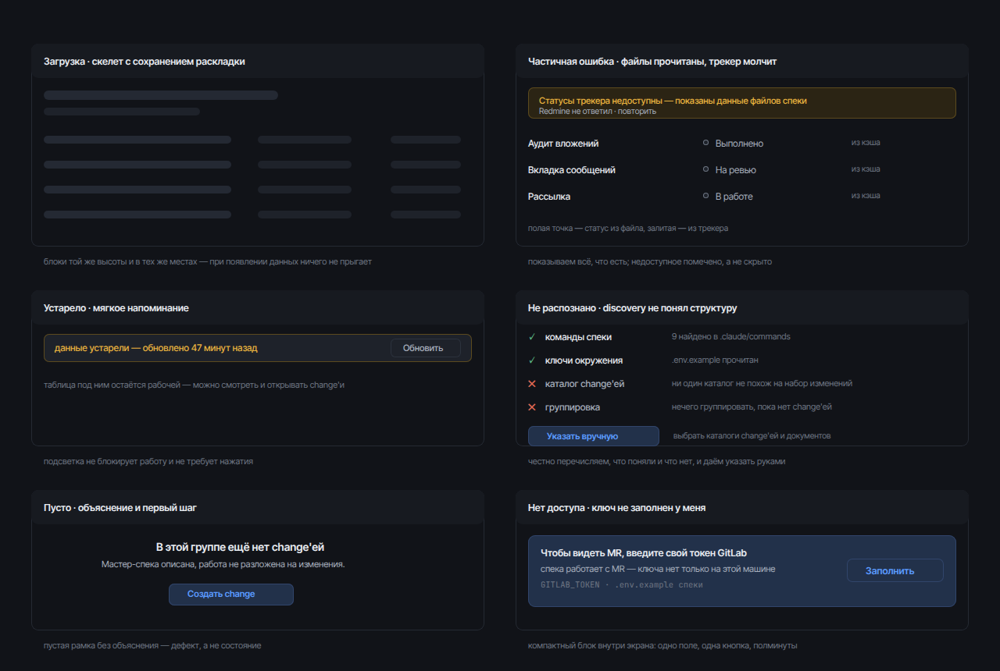
Данные приходят из трёх мест — файлов спеки, трекера и git — и приходят вразнобой. Здесь описано, что человек видит, пока их нет, или когда пришла только часть.
| Состояние | Что видит человек | Правило |
|---|---|---|
| Загрузка | скелет: блоки той же высоты и в тех же местах, что будут с данными | при появлении данных ничего не прыгает |
| Частичная ошибка | «Статусы трекера недоступны — показаны данные файлов спеки», рядом «Redmine не ответил · повторить». Каждая строка помечена «из кэша», у статуса полая точка вместо залитой | показываем всё, что есть; недоступное помечено, а не скрыто |
| Устарело | мягкая подсветка «данные устарели — обновлено 47 минут назад» и кнопка «Обновить». Таблица под ней остаётся рабочей | подсветка не блокирует работу и не требует нажатия |
| Не распознано | чеклист разбора: ✓ команды спеки (9 найдено) · ✓ ключи окружения · ✕ каталог change'ей («ни один каталог не похож на набор изменений») · ✕ группировка. Ниже «Указать вручную» | честно перечисляем, что поняли и что нет, и даём указать руками |
| Пусто | «В этой группе ещё нет change'ей», объяснение почему и кнопка «Создать change» | пустая рамка без объяснения — дефект, а не состояние |
| Нет доступа | «Чтобы видеть MR, введите свой токен GitLab» + имя поля GITLAB_TOKEN · .env.example спеки + кнопка «Заполнить» | компактный блок внутри экрана: одно поле, одна кнопка, полминуты |
Показать экран
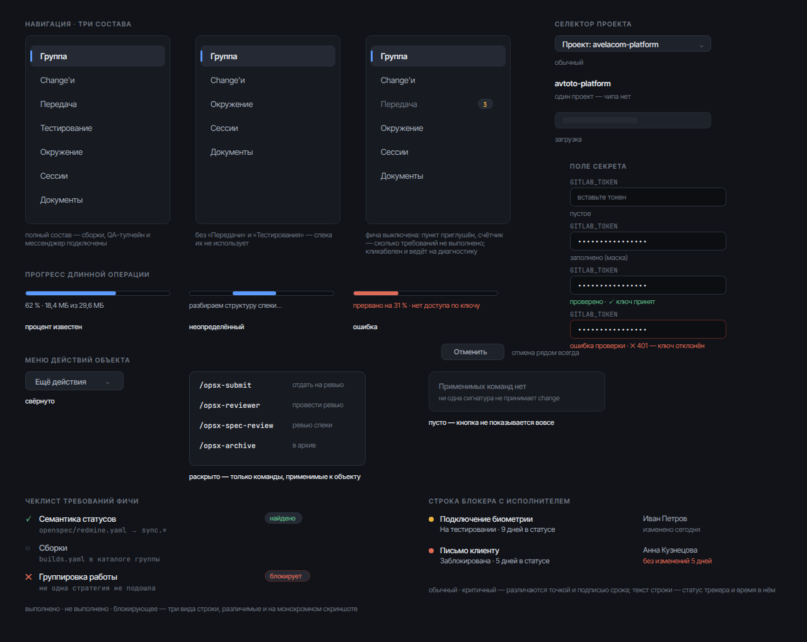
Семь элементов, которые встречаются больше чем на одном экране, — со всеми состояниями сразу, чтобы их не приходилось искать по макетам.
| Элемент | Состояния |
|---|---|
| Навигация | три состава: полный (сборки, QA-тулчейн и мессенджер подключены) · без «Передачи» и «Тестирования» (спека их не использует) · с выключенной фичей — пункт приглушён, рядом счётчик невыполненных требований; пункт кликабелен и ведёт на диагностику |
| Селектор проекта | обычный · один проект — чипа нет вовсе · загрузка |
| Поле секрета | пустое («вставьте токен») · заполнено маской · проверено «✓ ключ принят» · ошибка «✕ 401 — ключ отклонён» |
| Прогресс длинной операции | процент известен («62 % · 18,4 МБ из 29,6 МБ») · неопределённый («разбираем структуру спеки…») · ошибка («прервано на 31 % · нет доступа по ключу»). Кнопка «Отменить» стоит рядом во всех трёх |
| Меню действий объекта | свёрнуто («Ещё действия ⌄») · раскрыто — только команды, применимые к объекту · пусто — «Применимых команд нет: ни одна сигнатура не принимает change», и тогда кнопка не показывается вовсе |
| Чеклист требований фичи | ✓ выполнено — с указанием, где найдено (openspec/redmine.yaml → sync.*) · ○ не выполнено — где искали · ✕ блокирует — «ни одна стратегия не подошла» |
| Строка блокера | обычный и критичный — различаются точкой и подписью срока. Текст строки — статус трекера и время в нём («На тестировании · 9 дней в статусе»), справа исполнитель и когда менялось |
Что уже работает, а что в макетах
Приложение существует не только на бумаге: рабочий прототип запускается на macOS и на реальных данных нашёл семь расхождений, которые человек не видел.
| Экран | Прототип | Макет |
|---|---|---|
| 01 Группа — таблица change'ей | работает | 4 варианта |
| 02 Карточка change | работает | есть |
| 03 Передача | работает | есть |
| 04 Окружение | работает | есть |
| 05 Сессии | работает | есть |
| 06 Документы | работает | есть |
| 08–11 Подключение проекта | частично | есть |
| 12 Диагностика фичи | нет | есть |
| 13 Настройки проекта | нет | есть |
| 14 Тестирование | нет | есть |
| 15 Выбор корня в трекере | нет | есть |
| 16–17 Менеджер | нет | есть |
| 18–19 Общие состояния и элементы | частично | 2 листа |
Ближайшие шаги
- Подключение спеки по адресу и хранение ключей в системной связке.
- Разбор устройства чужой спеки — чтобы работало с любой командой, а не только с одной.
- Гибкая модель: группы, стеки и сборки становятся необязательными.
- Несколько проектов в одном окне.
- Диагностика выключенных фич.
- Экраны менеджера и тестировщика.